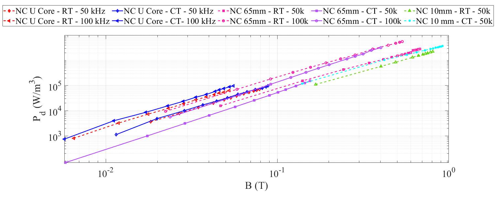

class: title-slide count: false .logo-title[] # Electrifying Large Scale Transport ### Cryogenic Power Electronics .TitleAuthor[Duleepa J Thrimawithana] --- layout: true name: template_slide .logo-slide[] .footer[[D J Thrimawithana](https://www.linkedin.com/in/duleepajt), Department of Electrical, Computer, and Software Engineering, The University of Auckland (June 2023)] --- name: S1 # New Zealand .center[<iframe width="975" height="430" src="https://www.youtube.com/embed/fHCemviY06Y?modestbranding=0&autohide=1&controls=0&playsinline=0&autoplay=0" frameborder="50" allow="encrypted-media" allowfullscreen></iframe>] --- # The University of Auckland - Highest ranked New Zealand university and 85th in the QS World University Ranking - Over 5,000 staff members and 40,000 students - Nine faculties including Medical & Health Sciences, Engineering, Business & Economics and Science .center[<img src="img/intro/UoAMap.png" height="300">] --- # Dept. of Electrical, Computer & Software Eng. .left-column[ - One of the 5 departments in the Faculty of Engineering - Offers 3 undergraduate degree programs - Electrical & Electronics, Computer Systems and Software - Project based teaching - 35+ full-time academic staff members and 15+ post-doctoral research fellows - 150+ postgraduate students and 700+ undergraduate students - Regular visiting research scholars and research students - Research groups include Power Electronics, Power Systems, Signal Processing, Robotics, Embedded Systems, Parallel Computing, Telecommunications and Control Systems ] .right-column[ <img src="img/intro/UoAEng.png" width="300px"> ] --- # Dept. of Electrical, Computer & Software Eng. .center[<img src="img/intro/EngBuild.png" height="400">] --- # Power Electronics Research Group .center[<img src="img/intro/PEGROUP.gif" height="430">] --- class: title-slide layout: false count: false .logo-title[] # Advanced Energy Technology Program ### An Overview --- layout: true name: template_slide .logo-slide[] .footer[[D J Thrimawithana](https://www.linkedin.com/in/duleepajt), Department of Electrical, Computer, and Software Engineering, The University of Auckland (June 2023)] --- name: S1 # Program Overview .center[<img src="img/overview/program.png" height="410px">] --- # National and International Partners .center[] --- # Power Electronics & GaN HEMTs Work Stream .center[] --- # System Overview .center[] --- class: title-slide layout: false count: false .logo-title[] # Component Characterization ### Behavior Under Cryogenic Conditions --- layout: true name: template_slide .logo-slide[] .footer[[D J Thrimawithana](https://www.linkedin.com/in/duleepajt), Department of Electrical, Computer, and Software Engineering, The University of Auckland (June 2023)] --- name: S8 # GaN HEMTs - R<sub>DS(ON)</sub> at 77K - The performance of GaN HEMTs in cryogenic temperatures depends on the gate technology - Devices with ohmic p-GaN gates do not perform well - The series Si-FET in a cascode limits improvement in R<sub>DS(ON)</sub> .center[<img src="img/devices/GaNTable.png" height="300px">] --- name: S10 # GaN HEMTs - R<sub>DS(ON)</sub> Comparison .center[] --- name: S10 # GaN HEMTs - R<sub>DS(ON)</sub> Variation .center[] --- name: S10 # GaN HEMTs - Threshold Voltage - The threshold voltage of devices with Schottky p-GaN gates reduces with temperature - In contrast the threshold voltage of cascodes and devices with ohmic p-GaN devices increases with reducing temperature .center[<img src="img/devices/vth.png" height="200px">] --- name: S11 # Si Switches - R<sub>DS(ON)</sub> at 77K - The R<sub>DS(ON)</sub> of Si MOSFETs improve until about 120K - The R<sub>DS(ON)</sub> of Si-Superjunction MOSFETs improve until about 120K but starts to get worse quite rapidly - The R<sub>DS(ON)</sub> of SiC devices do not deteriorate until about 220K - The effective R<sub>DS(ON)</sub> of Si IGBTs gets worse with reducing temperature .center[<img src="img/devices/siFet.png" height="200px">] --- name: S10 # Core Loss Measurement - Used a modified partial cancellation method to extract core losses - Tested laminated steel, iron powder, ferrite and nanocrystalline cores - Tests were conducted at 295K (room temperature) and 77K (using an LN2 bath) - A power amplifier drives the test setup and C<sub>p</sub> help reduce VA requirement .center[<img src="img/devices/CapPartialCancellation.png" height="270px">] --- name: S11 # Core Types - Many core types were tested to understand changes in magnetic properties at cryogenic temperatures - Notable core types tested are summarized in the table .center[] --- name: S12 # Core Losses .center[<img src="img/devices/coreLoss.png" height="450px">] --- name: S12 # Nanocrystalline Core Comparison - Not all nanocrystalline core types behaves the same - Introducing an air-gap in the core increases core loss .center[<img src="img/devices/ucore_toroid_ferrite_ribbon.png" height="350px">] --- name: S12 # Nanocrystalline Core Comparison - Not all nanocrystalline core types behaves the same - Introducing an air-gap in the core increases core loss .center[] --- name: S17 # The Design of a Cryogenic Inductor .center[] --- class: title-slide layout: false count: false .logo-title[] # A GaN Based Cryogenic Converter ### The Design and Performance --- layout: true name: template_slide .logo-slide[] .footer[[D J Thrimawithana](https://www.linkedin.com/in/duleepajt), Department of Electrical, Computer, and Software Engineering, The University of Auckland (June 2023)] --- name: S19 # A 5kW Cryogenic Converter - A GaN based synchronous buck converter that can operate in cryogenic temperatures has been built and tested down to 40K - All components except the controller were operated at cryogenic temperatures - Helps identify advantages and drawbacks of operating at cryogenic temperatures - Compared with operation at 295K including a loss breakdown .center[<img src="img/gan/ganSetup.png" height="250px">] --- name: S19 # Converter Efficiency at 77K - Experiments considered nanocrystalline inductor operation in 77K and 295K - This enabled comparison with a ferrite inductor that operated at 295K - As expected the nanocrystalline inductor leads to slightly lower efficiency - However, it allows over 70% reduction in weight .center[] --- name: S19 # Loss Breakdown - An air-core inductor is used to extract switch losses and compare - A significant improvement in switch loss is observed at 77K - Though a ferrite core inductor is more efficient there is a significant weight penalty - The nanocrystalline core allows over 70% reduction in weight .center[] --- name: S19 # Operation Down to 40K - The GaN based synchronous buck converter has been tested down to 40K .center[] --- class: title-slide layout: false count: false .logo-title[] # GaN HEMTs for Cryogenic Operation ### Characterization and Optimization --- layout: true name: template_slide .logo-slide[] .footer[[D J Thrimawithana](https://www.linkedin.com/in/duleepajt), Department of Electrical, Computer, and Software Engineering, The University of Auckland (June 2023)] --- name: S19 # Impact of Thermal Cycling - Samples with pre-existing surface features were cycled between 340K to 80K - Atomic force microscopy used to look for evidence of heterostructure degradation - Proportion of sample area which is occupied by fissures (averaged over 5 scans) used as a metric - This was measured using FIJI, by segmenting the atomic force microscopy images - No significant change which suggests repeated thermal cycling does not damage the heterostructure .center[<img src="img/structure/fissures.png" height="200px">] --- class: title-slide layout: false count: false .logo-title[] # Active and Logic Devices for Cryogenic Operation ### Characterization and Performance --- layout: true name: template_slide .logo-slide[] .footer[[D J Thrimawithana](https://www.linkedin.com/in/duleepajt), Department of Electrical, Computer, and Software Engineering, The University of Auckland (June 2023)] --- name: S19 # Active and Logic Devices - Intel Max 10 CPLD, TI C2000 series F280037 and an Atmel ATtiny1614 - All 3 devices works at 77K with both the internal RC oscillator as well as an external CMOS oscillator - ADC,PWM and UART peripherals work but ADC require a stable reference - OpAmps and isolators that function at 77K have been identified .center[] --- class: title-slide layout: false count: false .logo-title[] # Benchmark Setup ### SiC Based 150kW Motor Driver --- layout: true name: template_slide .logo-slide[] .footer[[D J Thrimawithana](https://www.linkedin.com/in/duleepajt), Department of Electrical, Computer, and Software Engineering, The University of Auckland (June 2023)] --- name: S19 # A Benchmark System - A liquid cooled, SiC based benchmark setup is under development to drive a 1MW HTS machine .center[<img src="img/benchmark/50kWSetup.png" height="400px">] --- class: title-slide layout: false count: false .logo-title[] # Wireless Power Research ### Stationary and Roadway EV Charging --- layout: true name: template_slide .logo-slide[] .footer[[D J Thrimawithana](https://www.linkedin.com/in/duleepajt), Department of Electrical, Computer, and Software Engineering, The University of Auckland (June 2023)] --- name: S19 # The Team - Members from Power Electronics, Centre for Advanced Composites Materials, Transportation, Engineering Science, Business School, GNS Science, Victoria University, Mahi Maioro and AUT - Collaborations with ASPIRE, Utah State University and Cambridge University .center[<img src="img/wpt/mbieTeam.png" height="320px">] --- name: S19 # Current Work .center[] --- name: S19 # Capabilities - The power electronics team work with the other teams to develop converter, magnetic and controller designs and extensively test them .center[] --- class: title-slide layout: false count: false .logo-title[] # Thank You